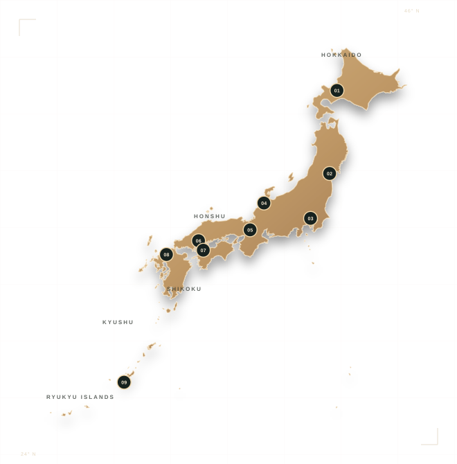

YOUR STARTING POINT
Choose a region
Nine regions, from the northern forests of Hokkaido to Okinawa’s subtropical islands. Pick a number on the map or use the list.
Browse all — placesSTART WITH ONE PLACE
AN EDITED FIELD GUIDE · NINE REGIONS
Browse Japan by region and travel month, then build a thoughtful day plan from one of ten major city origins.
THE FIELD ATLAS · 01
Explore all of Japan, or plan from ten major city stations or popular airport stations. Detailed estimates are clearly separated from live map directions.

YOUR STARTING POINT
Nine regions, from the northern forests of Hokkaido to Okinawa’s subtropical islands. Pick a number on the map or use the list.
Browse all — placesSTART WITH ONE PLACE
The map changes your nationwide results. Tokyo day-trip costs and times live in the separate Tokyo field desk.
TOKYO FIELD DESK · FIVE RESEARCHED PILOT ROUTES
Route ranges start at Tokyo Station. Choose the time, travel mode and budget; then compare the real trade-offs before you go.
ORIGIN Tokyo Station
Detailed pilot estimates below depart from Tokyo Station.Choose your month and limits to find a day.
BEST FITS · MAX 3
Choose one to see its routeYour matching outing will appear here.
ALL FIVE FIELD NOTES
Each guide opens directly with access, effort, itinerary and source links.These five route cards contain sourced estimates for one adult departing Tokyo Station. They are not live schedules or fare quotes. Nationwide place stories are inspiration; their route costs are not estimated here.
THE JAPAN FIELD GUIDE · — PLACES
From the far north to the subtropical south.
Find a place that fits your kind of journey.
Search places, regions, experiences, or a month. Open Plan by month for month-specific ideas; add Local Finds to narrow your search.
MAKE A JOURNEY OF IT
A season-aware shortlist shaped by your time, region, and travel style. Every pick opens its place story, exact map pins, routes, and live visitor reviews.
ADD THIS MONTH TO YOUR SEARCH
READY TO SEE HOW IT FITS TOGETHER?
Build a personal shortlist of seasonal places, with individual map searches and place stories. Travel between picks is not calculated.
Saved on this device. Choose the heart on a place to keep it here.
A field guide for the long way around. All — places, across nine regions of Japan.
FIELD NOTES, NOT CHECKLISTS
Travel conditions change. Follow the linked official visitor information for current access, opening hours and transport, and leave room to make the day your own.
Practical Japan travel planning